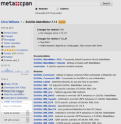
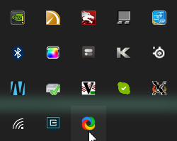

In order to build curie on Windows1, we need to build the various Perl dependencies. These Perl dependencies in turn require native libraries such as Gtk+ 3 and MuPDF. Using the MSYS2 package manager, we can install the native libraries and link against them.
The following steps show how to install the dependencies along with how I ended up debugging the build. I'm writing out this post in case the debugging steps are useful months later when I forget how or why I did things.
The following will be assuming 64-bit Windows (x86-64 architecture) throughout.
Building locally
-
Install MSYS2. This is a straightforward install
into the
C:\msys64directory. - Start the "MinGW-w64 Win64 Shell" from the Start Menu. This shell sets up the proper environment variables needed to use 64-bit libraries for the MinGW64 system.
-
Use the pacman package
manager to update the package database and install the build toolchain.
pacman -Syu # update # Install compiler and build configuration tools pacman -S --needed --noconfirm mingw-w64-x86_64-toolchain autoconf automake libtool make patch mingw-w64-x86_64-libtool
-
Install the native dependencies.
pacman -S --needed --noconfirm \ mingw-w64-x86_64-gobject-introspection \ mingw-w64-x86_64-cairo \ mingw-w64-x86_64-gtk3 \ mingw-w64-x86_64-expat \ mingw-w64-x86_64-openssl
-
Install Perl and cpanm
pacman -S --needed --noconfirm mingw-w64-x86_64-perl yes | cpan App::cpanminus
However, we ecounter a problem with this last command.Configuring M/MI/MIYAGAWA/App-cpanminus-1.7040.tar.gz with Makefile.PL Checking if your kit is complete... Looks good Generating a dmake-style Makefile Writing Makefile for App::cpanminus Writing MYMETA.yml and MYMETA.json MIYAGAWA/App-cpanminus-1.7040.tar.gz C:\msys64\mingw64\bin\perl.exe Makefile.PL -- OK Running make for M/MI/MIYAGAWA/App-cpanminus-1.7040.tar.gz cp lib/App/cpanminus/fatscript.pm blib\lib\App\cpanminus\fatscript.pm cp lib/App/cpanminus.pm blib\lib\App\cpanminus.pm "C:\msys64\mingw64\bin\perl.exe" -MExtUtils::Command -e cp -- bin/cpanm blib\script\cpanm pl2bat.bat blib\script\cpanm 'pl2bat.bat' is not recognized as an internal or external command, operable program or batch file. dmake: Error code 129, while making 'blib\script\cpanm' dmake: 'blib\script\cpanm' removed. MIYAGAWA/App-cpanminus-1.7040.tar.gz dmake -- NOT OKThe important line here is'pl2bat.bat' is not recognized as an internal or external command,
It tries to usingpl2bat.batto install thecpanmscript, but it is missing. Let's take a look:$ which pl2bat.bat which: no pl2bat.bat in (...)
OK, so it is not there. What about without the.batextension?# Where is pl2bat? $ which pl2bat /mingw64/bin/pl2bat # What does the beginning of the file look like. $ head -1 $(which pl2bat) #!perl -w
OK, so it does exist and is a Perl script. We just need it be a Windows batch file.- Note about
pl2bat -
The
pl2batcommand is a tool that is used on Windows in order to allow for running Perl scripts without having to specify that they must run under Perl. So instead of having to typeperl myscriptto run code in themyscriptfile, we can just typemyscriptand run it as if it was just another executable. This works by wrapping the original code and placing it into a Windows batch file that calls the Perl interpreter on the same file.
pl2batwhich does the conversion, but that file was not converted itself! To do that we find the path for thepl2batfile and runpl2baton it.pl2bat $(which pl2bat)
We can then installcpanmas before and it works.yes | cpan App::cpanminus
- Note about
-
Install the Perl dependencies for curie itself by running the following in a copy of the
curierepository:cpanm --installdeps .This reads thecpanfilewhich lists the Perl prerequisites for the project and installs everything needed to build, run, and test the code. But we hit an issue here when it attempts to install Gtk3 and in turn its dependency Glib.$ cpanm -f Glib --> Working on Glib Fetching http://www.cpan.org/authors/id/X/XA/XAOC/Glib-1.321.tar.gz ... OK Configuring Glib-1.321 ... OK Building and testing Glib-1.321 ... ! Installing Glib failed. See C:\msys64\...\build.log for details. Retry with --force to force install it. FAIL
Let's take a closer look at what is happening with Glib by adding the--verboseflag:$ cpanm --verbose Glib # [ redacted configuration output ] # [ redacted compilation output ] [ LD blib\arch\auto\Glib\Glib.dll ] Glib.o:Glib.c:(.text+0x156d): undefined reference to `__imp_glib_major_version' Glib.o:Glib.c:(.text+0x15a3): undefined reference to `__imp_glib_minor_version' Glib.o:Glib.c:(.text+0x15b1): undefined reference to `__imp_glib_micro_version' Glib.o:Glib.c:(.text+0x15e8): undefined reference to `__imp_glib_micro_version' Glib.o:Glib.c:(.text+0x1603): undefined reference to `__imp_glib_minor_version' Glib.o:Glib.c:(.text+0x160a): undefined reference to `__imp_glib_micro_version' GUtils.o:GUtils.c:(.text+0x573): undefined reference to `__imp_glib_micro_version' GUtils.o:GUtils.c:(.text+0x583): undefined reference to `__imp_glib_minor_version' GUtils.o:GUtils.c:(.text+0x593): undefined reference to `__imp_glib_major_version' GParamSpec.o:GParamSpec.c:(.text+0x2ee4): undefined reference to `__imp_g_param_spec_types' GParamSpec.o:GParamSpec.c:(.text+0x3032): undefined reference to `__imp_g_param_spec_types' GParamSpec.o:GParamSpec.c:(.text+0x3152): undefined reference to `__imp_g_param_spec_types' GParamSpec.o:GParamSpec.c:(.text+0x3292): undefined reference to `__imp_g_param_spec_types' GParamSpec.o:GParamSpec.c:(.text+0x3347): undefined reference to `__imp_g_param_spec_types' GParamSpec.o:GParamSpec.c:(.text+0x3422): more undefined references to `__imp_g_param_spec_types' follow C:\msys64\mingw64\lib\libgobject-2.0.a(libgobject_2_0_la-gclosure.o):(.text+0x222e): undefined reference to `ffi_prep_cif' C:\msys64\mingw64\lib\libgobject-2.0.a(libgobject_2_0_la-gclosure.o):(.text+0x224e): undefined reference to `ffi_call' C:\msys64\mingw64\lib\libgobject-2.0.a(libgobject_2_0_la-gclosure.o):(.text+0x2607): undefined reference to `ffi_prep_cif' C:\msys64\mingw64\lib\libgobject-2.0.a(libgobject_2_0_la-gclosure.o):(.text+0x262f): undefined reference to `ffi_call' C:\msys64\mingw64\lib\libgobject-2.0.a(libgobject_2_0_la-gclosure.o):(.rdata$.refptr.ffi_type_void[.refptr.ffi_type_void]+0x0): undefined reference to `ffi_type_void' C:\msys64\mingw64\lib\libgobject-2.0.a(libgobject_2_0_la-gclosure.o):(.rdata$.refptr.ffi_type_uint64[.refptr.ffi_type_uint64]+0x0): undefined reference to `ffi_type_uint64' C:\msys64\mingw64\lib\libgobject-2.0.a(libgobject_2_0_la-gclosure.o):(.rdata$.refptr.ffi_type_sint64[.refptr.ffi_type_sint64]+0x0): undefined reference to `ffi_type_sint64' C:\msys64\mingw64\lib\libgobject-2.0.a(libgobject_2_0_la-gclosure.o):(.rdata$.refptr.ffi_type_double[.refptr.ffi_type_double]+0x0): undefined reference to `ffi_type_double' C:\msys64\mingw64\lib\libgobject-2.0.a(libgobject_2_0_la-gclosure.o):(.rdata$.refptr.ffi_type_float[.refptr.ffi_type_float]+0x0): undefined reference to `ffi_type_float' C:\msys64\mingw64\lib\libgobject-2.0.a(libgobject_2_0_la-gclosure.o):(.rdata$.refptr.ffi_type_pointer[.refptr.ffi_type_pointer]+0x0): undefined reference to `ffi_type_pointer' C:\msys64\mingw64\lib\libgobject-2.0.a(libgobject_2_0_la-gclosure.o):(.rdata$.refptr.ffi_type_uint32[.refptr.ffi_type_uint32]+0x0): undefined reference to `ffi_type_uint32' C:\msys64\mingw64\lib\libgobject-2.0.a(libgobject_2_0_la-gclosure.o):(.rdata$.refptr.ffi_type_sint32[.refptr.ffi_type_sint32]+0x0): undefined reference to `ffi_type_sint32' C:\msys64\mingw64\lib\libglib-2.0.a(libglib_2_0_la-gmain.o):(.text+0x25c8): undefined reference to `__imp_timeGetTime' C:\msys64\mingw64\lib\libglib-2.0.a(libglib_2_0_la-gmain.o):(.text+0x2608): undefined reference to `__imp_timeGetTime' C:\msys64\mingw64\lib\libglib-2.0.a(libglib_2_0_la-gregex.o):(.text+0x1a6): undefined reference to `pcre_get_stringtable_entries' C:\msys64\mingw64\lib\libglib-2.0.a(libglib_2_0_la-gregex.o):(.text+0x231): undefined reference to `pcre_get_stringnumber' C:\msys64\mingw64\lib\libglib-2.0.a(libglib_2_0_la-gregex.o):(.text+0xa36): undefined reference to `pcre_exec' C:\msys64\mingw64\lib\libglib-2.0.a(libglib_2_0_la-gregex.o):(.text+0x132f): undefined reference to `pcre_compile2' C:\msys64\mingw64\lib\libglib-2.0.a(libglib_2_0_la-gregex.o):(.text+0x134d): undefined reference to `pcre_fullinfo' C:\msys64\mingw64\lib\libglib-2.0.a(libglib_2_0_la-gregex.o):(.text+0x13c9): undefined reference to `pcre_fullinfo' C:\msys64\mingw64\lib\libglib-2.0.a(libglib_2_0_la-gregex.o):(.text+0x1b44): undefined reference to `pcre_fullinfo' C:\msys64\mingw64\lib\libglib-2.0.a(libglib_2_0_la-gregex.o):(.text+0x1d9c): undefined reference to `pcre_study' C:\msys64\mingw64\lib\libglib-2.0.a(libglib_2_0_la-gregex.o):(.text+0x1e9d): undefined reference to `pcre_config' C:\msys64\mingw64\lib\libglib-2.0.a(libglib_2_0_la-gregex.o):(.text+0x1eb4): undefined reference to `pcre_config' C:\msys64\mingw64\lib\libglib-2.0.a(libglib_2_0_la-gregex.o):(.text+0x1f98): undefined reference to `pcre_fullinfo' C:\msys64\mingw64\lib\libglib-2.0.a(libglib_2_0_la-gregex.o):(.text+0x1fc8): undefined reference to `pcre_fullinfo' C:\msys64\mingw64\lib\libglib-2.0.a(libglib_2_0_la-gregex.o):(.text+0x1ff8): undefined reference to `pcre_fullinfo' C:\msys64\mingw64\lib\libglib-2.0.a(libglib_2_0_la-gregex.o):(.text+0x2028): undefined reference to `pcre_fullinfo
OK, that's a lot of errors. Seems that the linker phase (ld) has failed to find several function names in thelibglib-2.0.aandlibgobject-2.0.alibrary files.- Note about library files on Windows
-
We see that that library files above both end in the
.aextension (for archive). This indicates that this is a static library which means symbols such as function names get resolved at linking time through static linking. We can also resolve symbols at runtime through dynamic linking. These files have the extension.dllon Windows.
libglibandlibgobjectby using thepkg-configcommand:# Find the name of the glib and gobject library packages $ pkg-config --list-all | grep glib\|gobject glib-2.0 GLib - C Utility Library gobject-2.0 GObject - GLib Type, Object, Parameter and Signal Library # Get the linker flags $ pkg-config --libs glib-2.0 gobject-2.0 -LC:/msys64/mingw64/lib -lgobject-2.0 -lglib-2.0 -lintl
OK, that looks reasonable. But we see the above errors refer to functions that are prefixed withffi_andpcre_. The convention for C libraries is that the prefix referse to the libraries that the functions came from. But we don't see any flags for those libraries (-lffi -lpcre). So when linker attempts static linking against the.afiles, it does not know that the other libraries are needed. We can try to get the linker flags for static linking by adding the--staticflag topkg-config# Get the static linker flags $ pkg-config --static --libs glib-2.0 gobject-2.0 -LC:/msys64/mingw64/lib -LC:/msys64/mingw64/lib/../lib -LC:/msys64/mingw64/lib -lgobject-2.0 -lffi -lglib-2.0 -lintl -pthread -lws2_32 -lole32 -lwinmm -lshlwapi -lpcre -lintl -lpcre """] Ah, there we go! Let's compare this to what the Glib module uses when linking: [[!format txt
OK, wait, what's this? We get the list of dynamic linker flags where it says "Potential libraries", but when it says "Result:", a couple of those flags become paths to the corresponding.afiles. Let's rundmakewith theNOECHOflag to see what is going on:Glib-1.321 $ dmake NOECHO='' # [ redacted output ] [ LD blib\arch\auto\Glib\Glib.dll ] g++ Glib.def -o blib\arch\auto\Glib\Glib.dll -mdll -s -L"C:\msys64\mingw64\lib\perl5\core_perl\CORE" -L"C:\msys64\mingw64\lib" Glib.o GError.o GUtils.o GLog.o GType.o GBoxed.o GObject.o GValue.o GClosure.o GSignal.o GMainLoop.o GIOChannel.o GParamSpec.o GKeyFile.o GOption.o GBookmarkFile.o GVariant.o gperl-gtypes.o "C:\msys64\mingw64\lib\perl5\core_perl\CORE\libperl522.a" "C:\msys64\mingw64\lib\libgobject-2.0.a" "C:\msys64\mingw64\lib\libglib-2.0.a" "C:\msys64\mingw64\lib\libintl.a" "C:\msys64\mingw64\lib\libgthread-2.0.a" -Wl,--enable-auto-image-base Glib.o:Glib.c:(.text+0x156d): undefined reference to `__imp_glib_major_version' Glib.o:Glib.c:(.text+0x15a3): undefined reference to `__imp_glib_minor_version' Glib.o:Glib.c:(.text+0x15b1): undefined reference to `__imp_glib_micro_version' # [ rest of the linker errors as before ]
OK, so here we see that all the dynamic linker flags are using the full paths to the.afiles. Let's take a look at howMakefile.PLpasses on this information to theMakefileGlib-1.321 $ grep libgobject-2.0.a Makefile EXTRALIBS = "C:\msys64\mingw64\lib\libgobject-2.0.a" "C:\msys64\mingw64\lib\libglib-2.0.a" "C:\msys64\mingw64\lib\libintl.a" "C:\msys64\mingw64\lib\libgthread-2.0.a" LDLOADLIBS = "C:\msys64\mingw64\lib\libgobject-2.0.a" "C:\msys64\mingw64\lib\libglib-2.0.a" "C:\msys64\mingw64\lib\libintl.a" "C:\msys64\mingw64\lib\libgthread-2.0.a" # EXTRALIBS => q["C:\msys64\mingw64\lib\libgobject-2.0.a" "C:\msys64\mingw64\lib\libglib-2.0.a" "C:\msys64\mingw64\lib\libintl.a" "C:\msys64\mingw64\lib\libgthread-2.0.a"] # LDLOADLIBS => q["C:\msys64\mingw64\lib\libgobject-2.0.a" "C:\msys64\mingw64\lib\libglib-2.0.a" "C:\msys64\mingw64\lib\libintl.a" "C:\msys64\mingw64\lib\libgthread-2.0.a"]
] So it appears thatExtUtils::MakeMakeris setting the EXTRALIB and LDLOADLIBS variables. Let's try setting them ourselves to the output ofpkg-config:Glib-1.321 $ export GLIB_PKG_CONFIG="$(pkg-config --libs gobject-2.0 glib-2.0)" Glib-1.321 $ dmake NOECHO='' LDLOADLIBS="$GLIB_PKG_CONFIG" EXTRALIBS="$GLIB_PKG_CONFIG"
It built successfully! This means that there is a problem with using the full path to the.afiles. We need to see whyEXTRALIBSandLDLOADLIBSare being set the way they are. Let's search the distribution for documentation about these variables by going to the distribution's page on MetaCPAN and typing the queryEXTRALIBS LDLOADLIBSin the search box:
Looking at the results results, we see ExtUtils::Liblist and ExtUtils::MM_Unix.Screenshot of the ExtUtils-MakeMaker page highlighting the Search Distribution field 
The ExtUtils::Liblist looks promising. In version 7.14 of the documentation, there's a section about the Win32 behaviour:Screenshot of the results of the query for LIB Makefile variables An entry of the form
So the translation to full paths is a part of the design. Reading further, we see-lfoospecifies the libraryfoo, which may be spelled differently depending on what kind of compiler you are using. If you are using GCC, it gets translated tolibfoo.a, but for other win32 compilers, it becomesfoo.lib.An entry that matches
So if we but/:nosearch/idisables all searching for the libraries specified after it.:nosearchin the LIBS parameter of the function that generates theMakefile, (i.e.,WriteMakefile). Let's try that$ cpanm --look Glib Glib-1.321 $ export GLIB_PKG_CONFIG="$(pkg-config --libs gobject-2.0 glib-2.0)" Glib-1.321 $ perl Makefile.PL LIBS=":nosearch $GLIB_PKG_CONFIG" verbose # [ remove extra output ] Potential libraries are ':nosearch -LC:/msys64/mingw64/lib -lgobject-2.0 -lglib-2.0 -lintl -lmoldname -lkernel32 -luser32 -lgdi32 -lwinspool -lcomdlg32 -ladvapi32 -lshell32 -lole32 -loleaut32 -lnetapi32 -luuid -lws2_32 -lmpr -lwinmm -lversion -lodbc32 -lodbccp32 -lcomctl32': Result: "-LC:\msys64\mingw64\lib" "-lgobject-2.0" "-lglib-2.0" "-lintl" "-lmoldname" "-lkernel32" "-luser32" "-lgdi32" "-lwinspool" "-lcomdlg32" "-ladvapi32" "-lshell32" "-lole32" "-loleaut32" "-lnetapi32" "-luuid" "-lws2_32" "-lmpr" "-lwinmm" "-lversion" "-lodbc32" "-lodbccp32" "-lcomctl32" # [ remove extra output ] Glib-1.321 $ dmake NOECHO=''
Hey, it's working! So now we know that all we need is to put:nosearchin theLIBSparameter and it will build. But that's still problematic, because if I try to install any module, I will have to open it up to find out what it is passing in to LIBS and copy that into the command line for the configuration step. I popped into the#toolchainIRC channel on theirc.perl.orgnetwork to share what I had learned and ask if there was another way forward. After a quick convo withmst++, he came back with a one-liner that wrapped theWriteMakefilefunction and inserted:nosearchinto theLIBSparameter:perl -Maliased=ExtUtils::MakeMaker,EUMM \ -e 'my $i = EUMM->can("import"); no warnings "redefine"; *ExtUtils::MakeMaker::import = sub { &$i; my $targ = caller; my $wm = $targ->can("WriteMakefile"); *{"${targ}::WriteMakefile"} = sub { my %args = @_; $args{LIBS} =~ s/^/:nosearch /; $wm->(%args) }; }; do "Makefile.PL" or die "Hack failed: $@"'Yes, that is one line and it does work! -
Rejoice! The curie code runs!
Screenshot of the curie GUI with a test PDF open 
At this point, I was quite happy. Now I needed to reproduce these steps so that they can be used to test every set of changes to the codebase. I could do this with the Appveyor CI service. Little did I know that there was a lot more work coming my way.
Building on Appveyor
Portability is important to writing robust software and eventually curie will have an installer of Windows, so it is best to address any issues early through continuous integration. ↩
Chirag
Work on the Vagrant setup: choose a better base box

Refactor tests

Add the final tests for the keybinding PR

(how to to simulate key press events:
 )
)
Zaki
Embed AbiWord

Embed Evince

We need to start testing the code and automatically running those tests using continuous integration.
- Added test data repository.
- Start adding unit tests in PR
 to address
issue
to address
issue 
Looked at a review of PDF metadata extraction doc (mirrored here) from this blog.
Adding Travis-CI support: - Go to https://travis-ci.org/, select the + sign, click on project-renard https://travis-ci.org/profile/project-renard
- Zaki: need to add gir1.2-gdl-3 package for docking UIs to Travis-CI package whitelist
(issues are at
 ,
,  ,
,  ).
).
Issues carried over from last week:
Stan: Show number of pages

Chirag: Deactivate navigation buttons at start and end of document


Tasks
Zaki
- Create a table of Evince and Okular menus on the wiki
- Write GUI tests using mock document and xvfb
 (PR at
(PR at  )
)
Stan
- Show number of pages
(PR at
 ).
).
 |
and the corresponding unit tests (issue: [[!template Error: failed to process template git ]], PR: [[!template Error: failed to process template git ]])
Chirag
- Deactivate navigation buttons at start and end of document
(PR at
 ).
).
 |
 |
Zaki
Refactor Chirag's pull request (issue at
 and PR at
and PR at  ).
).Check for errors using Perl::Critic and Test::Spelling. This can be used to check for irregular whitespace and spelling errors among other things (issue at
 and PR at
and PR at  )
)
 |
- Add a compatibility layer for GtkScrolledWindow when using a Gtk+ version less v3.8
(issue at
 and PR at
and PR at  )
)
The pull requests from the previous meeting were discussed and merged. Since all of the work was performed on a single file, it is now necessary to start splitting off the code into different modules so that it is easier to work with.
Zaki: PR to refactor the script 
 |
Stan: Show number of pages
Chirag: Deactivate navigation buttons at start and end of document
Zaki: Work with PNG data in-memory: PR to create Cairo::ImageSurface in-memory
 which addresses issue
which addresses issue 
Assigned some tasks for further work on the GUI:
Stan: put the drawing area in a scrollable region

Chirag: Add a text field for selecting page by number

Zaki: Set the window title to the PDF filename
 with PR
with PR 
Added a section to the wiki for features that are found in other similar software that might be worth implementing.
This will be supplemented with screenshots and links to example code.
From last time, we were going to look at the MuPDF API for the last remaining task. However, we should step back and take a look at where we are going before moving forward and why we are doing each thing.
Brainstorming
First, we will look at UI functionality then move on to background processing that is necessary to support each of those.
UI
- Display
- Navigation
- back, forward
- jump to page
- history list (what was the last page I was at)

- Reading order: may be embedded in the PDF or might require extraction
Metadata
- RDF database
- Printing: cover page with metadata and QR code
- Summary: automatic summarisation
- Example old paper from 1965: A Semi-Automatic Computer-Microscope for the Analysis of Neuronal Morphology
- Note how the page layout was done manually
- BibTeX entry types table
Binding example:
- Using Inline::C to bind to
libmatio:
- Using Inline::C to bind to

Implementation work
We continued work on the simple GUI by adding buttons to the Glade GUI for
jumping to the first and last pages and moving forward and backwards
one page at a time. See PR  .
.
To speed up development, we skipped creating a binding for now and
just used the
mudraw
command to get the PDF page as a PNG image
and pdfinfo
command to get the number of pages in the PDF. The following is the
result.

Further reading
Books
These two books discuss and compare how people use books both on paper and on screens. There are many ideas in them both.
Marshall, Catherine C. "Reading and writing the electronic book." Synthesis lectures on information concepts, retrieval, and services 1.1 (2009): 1-185.
Dillon, Andrew. Designing usable electronic text: Ergonomic aspects of human information usage. CRC Press, 2004.
Review articles
- Koolen, Corina, Ray Siemens, and Alex Garnett. "Electronic Environments for Reading: An Annotated Bibliography of Pertinent Hardware and Software (2011)." Scholarly and Research Communication 3.4 (2012).
Research articles
Hinckley, K., Bi, X., Pahud, M., Buxton, B. "Informal information gathering techniques for active reading." Proceedings of the SIGCHI Conference on Human Factors in Computing Systems. ACM, 2012.
See this video for a demo.
Willinsky, John, Alex Garnett, and Angela Pan Wong. "Refurbishing the Camelot of Scholarship: How to Improve the Digital Contribution of the PDF Research Article." Journal of Electronic Publishing 15.1 (2012).
This one comes with a demo PDF that demonstrates various aspects of what they would like to achieve which they compare with the article that they modified.
As you can see, the authors opt to change the way PDFs are published, but clearly, we can't convince everyone to do that. So instead, we will need to be able to reformat documents our own way.
That will be the main contribution of Project Renard that nobody has done yet. I want to call it document resynthesis. I got the "resynthesis" name from a sound synthesis technique that takes existing sounds and takes the Fourier components and processes them in order to make new sounds.
Agenda
- Discuss Glade tutorial.
- Start a simple GUI in Glade for curie.
Tasks completed
Glade tutorial
- Tutorial code https://github.com/zmughal/learning-gtk/tree/master/charter
- If you are following this tutorial, note that there are changes that have occurred in GTK+3.0 since it was written. For example, the "expose-event" signal is now the "draw" signal: https://developer.gnome.org/gtk3/stable/ch25s02.html#id-1.6.3.4.11.
- Look up callback signature:
- Tutorial code https://github.com/zmughal/learning-gtk/tree/master/charter
Discuss the display of supplemental information along with document
- Knowledge Graph https://en.wikipedia.org/wiki/Knowledge_Graph: Google's infoboxes which show up on search.
- SPARQL: query langauge for semantic web data.
- Utopia http://utopiadocs.com/: a PDF reader that shows social information and retrieves from sources such as the Protein Data Bank.
- Reflect: browser plugin for chemistry identifier lookup
Design a GUI for displaying images of the document
- PR
(and progress images)
- Examples
- Anjuta: IDE with docking. Uses GDL http://anjuta.org/.
- Example of simple PDF viewer using Poppler https://yassernour.wordpress.com/2010/04/04/how-hard-to-build-a-pdf-viewer/.
- Display a single image
First attempt: draw a green colour on the whole drawing area:

Second attempt: draw an image read from a file on the drawing area:

- PR


{kind=link}
{kind=link}
{kind=link}
Tasks in progress
- PDF rendering using MuPDF library
- Install MuPDF
http://mupdf.com/downloads/
mkdir build; cd build wget 'http://mupdf.com/downloads/mupdf-1.8-source.tar.gz' tar xvvzf mupdf-1.8-source.tar.gz cd mupdf-1.8-source make HAVE_GLFW=no make HAVE_GLFW=no install
- Make a note of the OpenGL viewer flag at
 .
.
- Install MuPDF
http://mupdf.com/downloads/
Tasks remaining
Look into MuPDF API.
- http://mupdf.com/docs/overview
- http://mupdf.com/docs/
- See issue
 .
.
Refactor GUI code.
Agenda
- Record all steps taken today to a post on the project-renard wiki.
- That means that this EtherPad document will become a page on the wiki.
Choose a standard version of Perl 5 to work on. The code will not work on older versions. This is so that we can use modern features without worrying about backwards compatibility.
Perl v5.20 is a good choice right now. It supports method signatures as a built-in feature.
Set up GTK+ 3 on Linux so that it can run the curie code.
- This is related to issue "GTK+ Linux setup"
 .
.
- This is related to issue "GTK+ Linux setup"
Tasks completed
curie: Install development packages for libgtk-3.0 https://developer.gnome.org/gtk3/ on Debian GNU/Linux.
- Install the dependencies on Debian by running:
cd curie sudo xargs apt-get install \ -y --no-install-recommends \ < debian-packages
- Install the dependencies on Debian by running:
base: Make sure the version of Perl 5 you have is v5.20 or greater.
- If you do not have that version of Perl 5, you can use
perlbrewto set it up. Follow the instructions at http://perlbrew.pl/.
- If you do not have that version of Perl 5, you can use
base: We will use cpanm to install the Perl modules that we need. It can be installed by running
perlbrew install-cpanmor if you do not have perlbrew, following the instructions at https://github.com/miyagawa/cpanminus#installing-to-system-perl:
cpan App::cpanminuscurie: Removed the Gtk3::Ex::PDFViewer code which was causing problems
- PR
 .
.
- PR
curie: Install the Perl CPAN packages needed for Gtk3.
- This can be done more easily by creating a
cpanfilewhich lists the requirements. - PR
 .
. Now that the
cpanfileis available, you can install the dependencies by runningcpanm --installdeps .
- This can be done more easily by creating a
curie: Install and investigate the Glade UI designer.
Glade can be installed by running the commands:
sudo apt-get install --no-install-recommends gladeThere is a Glade tutorial at http://live.gnome.org/Glade/Tutorials.
We need to see if Glade https://glade.gnome.org/ can handle the docking widgets that are provided by libgdl https://developer.gnome.org/gdl/.